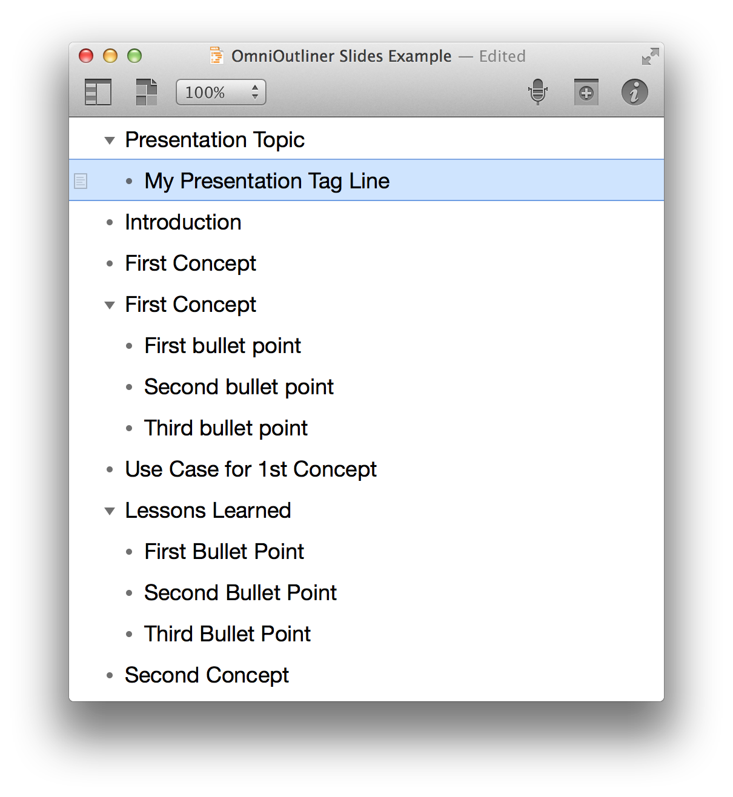

Part of the fundamental magic of Automation, is its inherent ability to express the data contained in one application, in a different way in another application. What would normally be an intricate laborious process when done by hand, is reduced to a quick effortless operation through AppleScript’s ability to control and link the targeted applications.
The following example script demonstrates these concepts perfectly as it builds a Keynote document from an OmniOutliner outline document.
NOTE: OmniOutliner is productivity software from the Omni Group, and is available for purchase from the Mac App Store, or as a trial version from the Omni Group website.

To try the demo, follow these steps:
DO THIS ►DOWNLOAD and open the OmniOutliner example document.
DO THIS ►If it isn’t already activated, turn on the system-wide Script Menu and create a OmniOutliner scripts folder (details here)
DO THIS ►Open the example script (⬇ see below ) in the AppleScript Editor, and save the script into the OmniOutliner scripts folder.
DO THIS ►With the example document open in OmniOutliner, select the saved script from the Script Menu.
The script will create a new Keynote document and add a slide, with transitions, for each of the outline sections, filling in titles and body content as indicated. Once the document is created, the presentation will be played from the beginning, and auto-advanced throughout.
IMPORTANT: For non-English language users. In order for the script to work as expected, you will need to replace the master slide names in the script with versions using the current language of your computer. For example:
English-German
"Title - Center"
"Titel - Mitte"
English-German
"Title & Subtitle"
"Titel & Untertitel"
English-German
"Title & Bullets"
"Titel & Aufzählung"
English-Norwegian
"Title - Center"
"Tittel – sentrert"
English-Norwegian
"Title & Subtitle"
"Tittel og undertittel"
English-Norwegian
"Title & Bullets"
"Tittel og punkttegn"
English-Japanese
"Title - Center"
"タイトル（中央）"
English-Japanese
"Title & Subtitle"
"タイトル & サブタイトル"
English-Japanese
"Title & Bullets"
"タイトル & 箇条書き"
If you are not sure what the master slide titles are for the current document, then run this script:
tell application "Keynote" to get the name of every master slide of the front document
New Presentation from Outline
01
propertydefaultTransitionDuration : 0.5
02
propertydefaultTransitionDelay : 2.0
03
propertydefaultAutomaticTransition : true
04
05
tellapplication "OmniOutliner"
06
activate
07
08
setdialogParagraphBreaktoreturn & return
09
display dialog "This script will create a new Keynote document based on the content of the frontmost OmniOutliner document." & dialogParagraphBreak & "Each section head of the OmniOutliner document will be used as the title for a new slide in the Keynote document." & dialogParagraphBreak & "If a section contains no children, the “Title - Center” master will be used." & dialogParagraphBreak & "If a section contains one child, the “Title & Subtitle” master will be used, with the name of the child becoming the subtitle." & dialogParagraphBreak & "If a section contains more than one child, the “Title & Bullets” master will be used, and the section’s children will become the bullet points for the created slide." & dialogParagraphBreak & "The new slideshow will automatically play from the beginning and auto-advance." with icon 1
10
11
if not (existsdocument 1) then errornumber -128
12
13
tell frontdocument
14
set theslideCountto thecountofsections
15
end tell
16
end tell
17
18
tellapplication "Keynote"
19
activate
20
21
set thethemeNamesto thenameof everytheme
22
23
set thechosenThemeto ¬
24
(choose from listthemeNameswith prompt ¬
25
"Choose a theme to use:" default items (item 1 ofthemeNames))
Mention of third-party websites and products is for informational purposes only and constitutes neither an endorsement nor a recommendation. MACOSXAUTOMATION.COM assumes no responsibility with regard to the selection, performance or use of information or products found at third-party websites. MACOSXAUTOMATION.COM provides this only as a convenience to our users. MACOSXAUTOMATION.COM has not tested the information found on these sites and makes no representations regarding its accuracy or reliability. There are risks inherent in the use of any information or products found on the Internet, and MACOSXAUTOMATION.COM assumes no responsibility in this regard. Please understand that a third-party site is independent from MACOSXAUTOMATION.COM and that MACOSXAUTOMATION.COM has no control over the content on that website. Please contact the vendor for additional information.